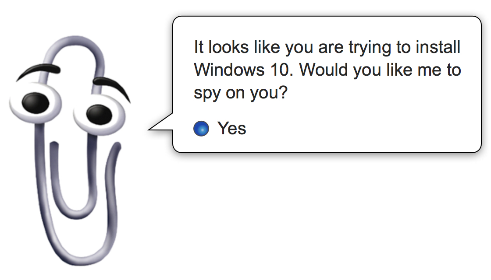

Windows To Your Soul
31st July, 2015 —
This week’s roundup brings you privacy, politics, tracking, Timelines, and a little thing called “corporate nullification.”
Windows 10
Windows 10 is here! That may not mean much to you if you’re not a Windows user. But if you are or know someone who is, you should be aware of the dodgy changes to Microsoft’s Privacy Policy and Service Agreements:
- allows them to disclose your personal data on their “good faith”
- collects all your data (including “speech data”) for use with Cortana
- syncs your browser history by default
- gives advertisers a unique tracking ID tied to your email address
- sends your Bitlocker recovery encryption key to OneDrive by default
Read the article on Alphr for instructions on how to change the default privacy settings to something more favourable. (Note: you cannot opt out of everything.)
Alec Meer also covers how to take control of your Windows 10 settings. He suggests that you choose custom settings rather than “Express” settings during installation. This way you can ensure minimal data is collected. Alec makes the point that Microsoft are merely trying to keep up with Google’s free offerings:
“People aren’t so hot on paying for things these days, which means the money comes from harvesting data and flogging it to advertisers and other organisations who want to know exactly what we’re all up to online. Microsoft want a piece of that, so if you ever wondered why they’ve made the Windows 10 upgrade free to Win 7 & 8 users, here’s one possible answer.”
Alec tells us that what makes this so sinister is that this isn’t quite the same tracking as we’re used to on the web. Instead it’s a large corporation gathering and storing vast amounts of data on your computing habits, not just what you do in the browser. And this is okay for those of us who are aware of these issues, and know when to opt-out, but what about everybody else?
An open letter from Chris Beard, CEO of Mozilla, has called out Microsoft for “stripping users of their choice” by “effectively overriding existing user preferences for the Web browser and other apps.” Chris suggests Microsoft have deliberately created dark patterns to make it difficult for users to preserve their previous settings.
Catch up on the acronyms
It’s been a while since we covered all the trade agreements, and their acronyms. The war is still raging, and little progress has been made as the trade agreements are still being negotiated in secret.
CISA
CISA is the Cybersecurity Information Sharing Act in the US. One of the key issues is that it allows companies to share any type of information with the government, including personal data. When companies do this, CISA also ensures that they are protected from being sued. As Access say, “it’s a surveillance bill in disguise.”
An article on The Hill explains the problem with the “cybersecurity” in CISA. It’s not a bill to protect an individual’s security, but instead “essentially legalizes all forms of government and corporate spying.”
Access have started a Week Of Action against CISA, and you can use the form on the Stop Cyber Surveillance site to send a fax to US Congress. You can also read more about CISA on the Reddit CISA Ask Me Anything (AMA) with EFF, Access, ACLU, and Fight For The Future.
DRIPA
We mentioned DRIPA, the UK Data Retention and Investigatory Powers Act, a couple of weeks ago when it was overturned after judicial review. David Davis, former Shadow Home Secretary and current Conservative MP, has written about the flaws in DRIPA on WIRED. David first explains the undemocratic process of how DRIPA was rushed through the UK parliament, and continues on how the government has a very poor record with legislation in privacy and surveillance:
“This string of defeats shows a government that has lost control of its surveillance powers, which are being used for reasons far beyond those envisaged, without sufficient justification or oversight.”
David draws attention to the report on RIPA (Regulation of Investigatory Powers Act), and the RUSI report, and explains how proper judicial oversight could work:
“There is now a new consensus that the UK needs to clarify its surveillance powers, and introduce judicial oversight. Specially trained and security cleared judges would be a far more effective oversight mechanism.”
Barmy British Government
The UK government’s bananas behaviour doesn’t stop with surveillance. David Cameron has proposed introducing anti-porn measures that will put any site at risk of censorship. Cameron proposes that visitors to porn websites will be required to enter bank or credit card details to verify their age, preventing minors from entering false date of birth information. However, as Jim Killock points out, most porn sites are hosted outside of the UK, so the only way to impose this filter would be a national firewall, like China. And, like China, this firewall would censor sites for everyone, and would likely be widely circumvented.
It’s another exercise in government foolishness when it comes to technology. As Jon Evans wrote in Techcrunch, it’s a result of people who don’t understand technology believing that “technology is magic.” This belief is convenient for them because magic has no limitations. Instead, better education is required to teach children and parents how to use the web safely. Children would benefit more from decent education about sex and relationships than an unenforceable ban.
Oh. And the French…
This week Julia Powles wrote about the “Kafkaesque surveillance” of the UK and France. Kafka spoke of laws involving arbitrary, secretive acts on the part of elites. Julia argues this shouldn’t be the case in democracies, with checks and balances between the legislative, executive, and judicial branches of government.
“But if ever there were a set of laws at the thin edge of the world, reeling back the swath of advances in civil rights and liberties during the century since Kafka resolved his thinking, and embodying his diagnosis with terrifying precision, they are the laws surrounding surveillance and counter-terror in the digital age.”
Julia refers to DRIPA, and the Snoopers’ Charter, and a French law passed this week that allows intelligence agencies to monitor phone calls and emails, bug cars, homes, and keyboards for images, sound and data, all without prior judicial authorisation. The law also requires internet service providers to install “black boxes” to filter all internet traffic.
“The reality is that the French and British governments have discerned that a potent combination of public fear about extremism and political appetite for tough national security measures have cleared the path for draconian overreach and surveillance of all our communications.”
Tracking is breaking the web and advertising needs a rethink
This week, the web industry has been getting its knickers in a twist over The Verge and web performance. Is it rubbish browsers that are preventing us from having all-singing all-dancing websites? Or is it the amount of JavaScript we’re using everywhere?
Les Orchard points out that the slow performance problem is not down to the rendering. It’s the blind and endless use of trackers:
“I feel like someone just set up the entire vendor hall from an awful tech conference in my living room. Seriously, could you folks just not pick one or two or ten? Did you hit every booth and say ‘Yeah, cool, sign us up!’ I feel thoroughly spindled & folded & researched, here.”
Les suggests that maybe trackers should be used more responsibly, but also that we could be looking into alternative business models for the web. (Sound familiar, anyone?)
Following on, Charles Arthur has written a fascinating look at advertising on the web. He suggests that “the adblocking revolution is months away.” With Apple’s iOS9 introducing content blocking, which could be easily used to create ad blocks, Charles argues there’s the potential to really challenge the business models based on advertising and tracking.
What have those cheeky corporations been up to this week?
It’s been a particularly busy week for Google, with news about all sorts of things all over the place…
Google has announced that users can now use their own encryption keys to encrypt Google Compute. However, Jacob Ginsberg, Senior Director at Echoworx is suitably sceptical:
“Google’s recent announcement about offering its Compute Engine users their own encryption keys will only affect businesses that use Google to host custom applications. While it is a response to Microsoft’s comments that Google snoops, but it doesn’t change the fast that Google still has access to customer email data via Google Apps or Gmail.”
“Why so sceptical?” you ask… Well, Google is doing stuff like scouring Ancestry.com to find out what's in your genes, and combining data from Google Photos and Google Maps to create a Google Timeline from the data. Lisa Vaas tells you how to disable the Timeline in her article but Google still has that data, disabling it only makes the Timeline invisible to you.
Facebook is fuelling ad tracking by nagging app users to instantly log in on iOS Safari. As Josh Constine explains, it’s a user experience improvement as few users want to fill out their full email address and password on their phone, and so bounce away from Facebook. Making it easy for users to log in with one tap also helps keep Facebook’s trackers alive outside of the Facebook app.
Last week we look at the harm that can be caused by Facebook’s real name policy. This week, Germany has ordered that Facebook must allow its users to use pseudonyms, and is not allowed to request official IDs. As Mona Lalwani on engadget pointed out:
“Facebook’s authentic name policy was meant to make the social media platform a safe place where ‘pretending to be anything or anyone isn’t allowed.’ But, ironically the policy bred harassment instead of curtailing it.”
Hopefully other countries will follow suit, preventing Facebook from pushing citizens around for the sake of more accurate data.
Uber
Uber is now facing legal action in the UK over drivers’ rights: again because they treat their drivers as contractors, not employees. Steve Garelick, branch secretary of the GMB union professional drivers branch said in a statement:
“Operators like Uber must understand that they have an ethical and social policy that matches societies’ expectations of fair and honest treatment… For far too long the public have considered drivers as almost ‘ghosts’. They are not seen as educated or with the same needs, aspirations and desires as the rest of the public.”
Frank Pasquale and Siva Vaidhyanathan explain that companies like Google, Facebook, and Uber think themselves above the law, and ignore it as part of “corporate nullification:”
“it’s a libertarian-inspired attempt to establish their services as popular well before regulators can get around to confronting them. Then, when officials push back, they can appeal to their consumer-following to push regulators to surrender.”
The nullifying companies act as though their push-back against law and regulation is pushing back against “outdated” rules, and in favour of innovation. But as Frank and Siva point out, their major innovation is strategic and manipulative, and is meant to undermine local needs and effective governance. They argue that these corporations are proving that they need to be held accountable for the power they exercise:
“Polishing their left-libertarian veneer, the on-demand economy firms now flouting basic employment and anti-discrimination laws would like us to believe that they follow in the footsteps of Gandhi’s passive resistance, rather than segregationists’ massive resistance. But their wealthy, powerful, nearly-all-white-and-male cast of chief executives come far closer to embodying, rather than fighting, ‘the man’.”
Is it on our Radar?
This week, we launched our Ind.ie forum and it’s already filling up with interesting discussions. We’ve included a Radar category where we’ll be posting links to relevant articles and other information. If you’ve got any suggestions, please post them there!
Thanks to Richard Osbaldson for giving me a heads-up on a few of the links today.